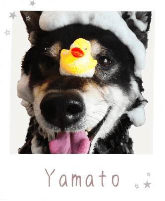

career
-
服飾専門学校を卒業
ファッションにとても興味があり、服飾の専門学校へ進学しました。
縫製・流通・配色・デザイン等幅広く学べて楽しい日々を過ごしました。 -
独学で医療事務の
資格を取得し、転職約8年程、医療事務の仕事に従事しました。
業務の中で、来院している患者さんの対応・電話対応・受付・計算・会計を
同時に進める必要があるため、マルチタスク能力が鍛えあげられました。 -
ITに興味を持ち、
ヘルプデスクの仕事へ医療事務のお仕事の際に触れていたIT機器を取り扱う会社へ転職し、
『医療機関で働く人』から『医療機関で働く人をIT面からサポートする人』へ。
その後、他の業界のヘルプデスクも経験しました。 -
Webデザインと出逢い、
勉強を始めるヘルプデスクのお仕事をしながら、コーディングやWebデザインの勉強を始めました。
-
Webデザイナーとしての
お仕事を開始Webサイト制作を中心に、Webデザインのお仕事もさせていただいています。
私の経歴について
ご紹介させていただきます
skill
-
デザイン
デザインの基礎に則りつつ、「なぜこのようなデザインにしたのか」をしっかりと考えながら制作し、「一つ一つに理由のあるデザイン」を心がけています。
Illustrator/Photoshop/XD
-
コーディング
誰が見ても分かりやすいコーディングを心がけています。
また、次々に新たな情報が出てくる分野であるため、知識のアップデートを常に意識しています。HTML/CSS/jQuery/GSAP/VSCode/WordPress
-
コミュニケーション
接客業やヘルプデスクの経験があるため、コニュニケーション力には自信があります。
人前で話す機会も多かったため、得意な方だと自負しております。PowerPoint
favorite
気になる項目を
押してみてください！
-
旅行
-
柴犬
-
食
私の「好き」について
ご紹介させていただきます！

- 旅行
- 柴犬
- 食
-
旅行
国内旅行が好きです！年に1,2回くらいは旅行しています。
最近だと兵庫へ行ってきました！
特にお気に入りなのは広島です。（牡蠣好きです）
まだ海外には行ったことがないので、いつか挑戦してみたいです。 -
柴犬
昔から柴犬が好きです！
柴犬が散歩しているとつい目で追ったり、。
youtubeでも柴犬の動画をついつい見てしまいます！
実家でも黒柴を飼っています。とっても可愛いです＾＾
載せている写真は、シャンプー中のやまとです。 -
食
食べることが好きで、週に1,2回は外食します。
特にラーメンやお寿司が好きです。（ラーメンは週一で食べてます）
料理にもハマっていて、様々なレシピに挑戦しています。
最近アヒージョを作ったのですが、
簡単でとっても美味しかったのでおすすめです！
CHARACTER
ストレングス・ファインダーTOP5
全34の資質のうち、
私の上位5位をご紹介いたします。
ストレングス・ファインダーとは？
177個の質問に答えることで、自分の資質(強み)が 導き出される「才能診断」ツールです。
-
学習欲
食事忘れて集中してしまうくらい、何かを学ぶことが好きです。
-
目標志向
目標を立てることで、より頑張れるタイプです。
-
未来志向
未来のビジョンから今すべきことを考えることが多いです。
-
親密性
初対面の方でも親しくなると、とことん仲良くなります。
-
調和性
争いごとが苦手で、間を取り持つことも多いです。
STRONGPOINT
私の長所について、5人にインタビューをしてみました！
その結果をご紹介させていただきます。
- 1人目
- 2人目
- 3人目
- 4人目
- 5人目
相手の力になりたい
という気持ちを
とても感じる
芯があり
軸がぶれない
タスクに追われても
いつも落ち着いてる
相手のことまで
たくさん考えられる
気遣いができる
好奇心旺盛で
色々なことに
チャレンジする
学んだことを
アウトプットする
能力が高い
行動や言動が丁寧で
話しかけやすい
自分自身や物事を
良くしようという
姿勢が常にある
物事を順序立てて
考えることができる
同時に複数のものに
取り組める
行動力がある
行動力・実行力が高い
意見が対立しても
相手の意見を
否定しない
芯がしなやか
私の長所って
なんだろう？？
それはね！